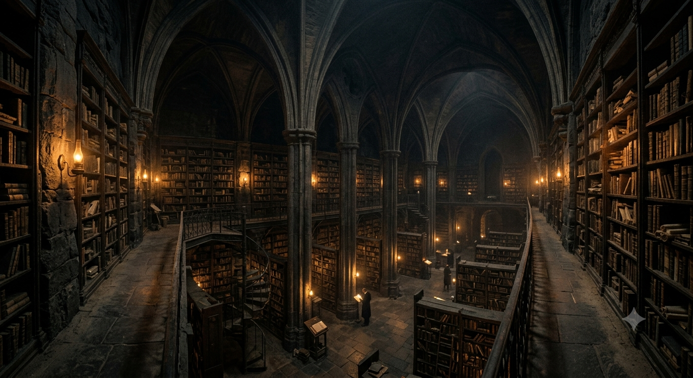
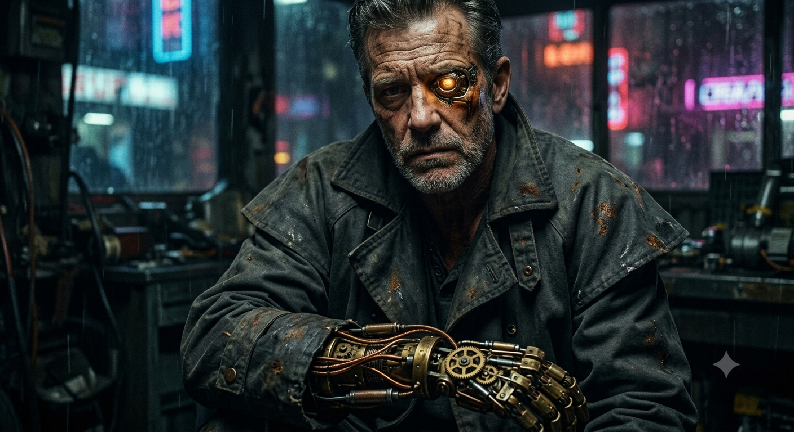
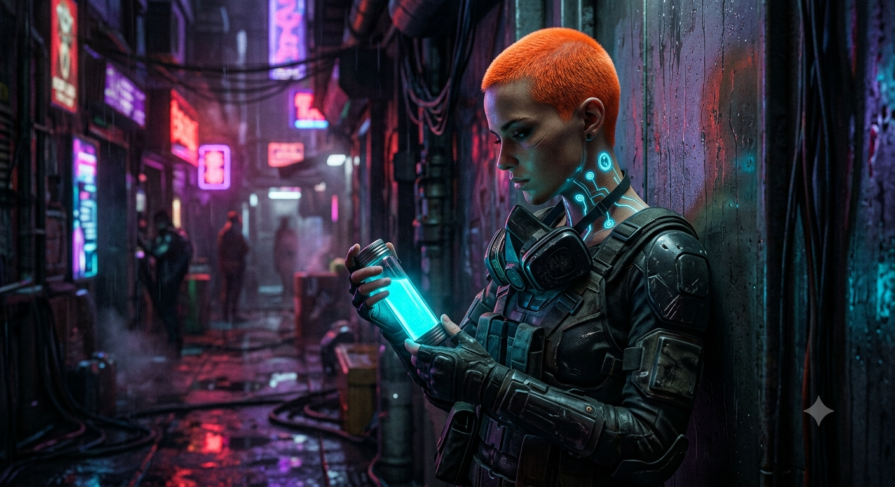

The Vaults of Alexandria II
Part 1: The Secret in the Dark
The underground library was always cold. It was called Alexandria II, and it was built deep inside the dark basalt rocks of Mars, far below the silver corporate towers of Neo-Cyrenia. Here, the air smelled of old paper, dry dust, and electronic ozone. The temperature was strictly regulated to keep the ancient paper from crumbling into dust, making the large hall feel more like a stone tomb than a place of knowledge.

Silas Vance
Subject ID: #44-ARCHIVIST
Silas Vance sat at his heavy metal desk. He was forty-five years old, but his face looked much older, covered in deep lines from years of hard, solitary work. He wore his favorite dark grey duster coat, dirty with oil spots and red Martian rust. His right hand was completely different. It was a beautiful, complex mechanical prosthetic made of brass plates and copper wires. The small gears inside his knuckles made a quiet, rhythmic clicking sound every time he flexed his fingers.
Silas reached into his coat pocket and pulled out a heavy silver pocket watch. He turned the little wheel at the top to wind it. *Tick. Tick. Tick.* The mechanical sound was loud and steady in the silent library. This watch was his most important possession. It was a real, antique object brought from Earth by his family generations ago. On Mars, where everything was digital, virtual, and temporary, this watch was a rare piece of true, unchangeable reality.
Suddenly, a bright orange light flashed inside Silas’s left eye. It was his cybernetic implant, a technical eye layer forced upon all corporate workers. The flashing amber light meant the company’s automated security program was running a routine tracking check through his eyes. Silas closed his real eye, holding his breath, and waited until the painful flashing stopped. He hated the implant. It was a constant reminder that SynCorp was always watching.
He walked slowly to Sector 7, the fiction archive. He was looking for a rare first-edition copy of George Orwell’s 1984. Silas found the spot on the shelf, reached out his mechanical hand, and pulled the heavy leather book from the dark. But when he opened it under his amber eye light, his breath stopped. The pages were completely empty. Every single page was a blinding, pristine white. The black ink was entirely gone, as if it had never been printed.
"No," Silas whispered, his voice a low, gravelly scrape in the cold silence. "Not this one too. They promised they wouldn't touch this sector."
A soft, metallic sound broke the heavy silence. It came from the next aisle, near the ancient philosophy section. *Scritch. Scritch.* Silas moved silently, stepping through the deep shadows, making no sound in his heavy leather boots. He turned the corner into Aisle 12.

Lyra
Subject ID: #04-REBEL
A young woman was standing there. She was thin, wire-shaped, and agile, looking around twenty-two years old. She wore a dark, form-fitting tactical suit under a strange poncho made of chameleon-mesh fabric. Her hair was cut very short like a boy's and dyed a bright, wild neon-amber. Along her neck and collarbones, Silas could see faint blue lines—glowing data-port tattoos that pulsed with electronic data.
In her hand, she held a heavy glass cylinder vial. Inside the vial, a thick, glowing blue liquid was swirling like a miniature nebula. It cast a bright, neon-cyan light on her pale face. She was using a small, precise tube to spray this liquid onto the pages of an old history book.
"Stop right there," Silas said loudly, stepping out of the shadows and raising his heavy mechanical hand. The girl jumped in surprise, letting out a sharp gasp.
"I'm not destroying it!" the girl hissed, her teeth clenched. "I'm saving it, you old corporate fool! My name is Lyra, and this is the Living Ink. It’s a special bio-chemical solution I created in the hidden street labs underground. When you spray it on old paper, it chemically locks the original ink inside the cellulose fibers. After that, no corporate bleaching laser can erase the text."
Before Silas kouln't answer her, his left eye flashed violently, sending a sharp pain through his skull. A bright red warning message appeared directly in his field of vision: [WARNING: UNAUTHORIZED INDIVIDUAL DETECTED. REPORTING TO SYNCORP CENTRAL SECURITY.]
"They are coming," Silas whispered in sudden panic. "My eye... the corporate system just scanned your face."
Lyra looked terrified. "Then we have to go! Now! If they catch me here, they will execute me. If they catch you helping me, they will completely wipe your brain and turn you into a mindless corporate drone."
Silas looked down at the empty, white copy of *1984*, then at his ticking silver pocket watch, and finally at Lyra’s desperate face. He had spent his whole life obeying the rules. But now, the dark was no longer safe.
"Follow me," Silas said, his final decision made. He grabbed a heavy leather bag from under his desk and threw the last uncorrupted history book of Earth into it. "I know an old way out through the maintenance ventilation systems. But we have to run right now."